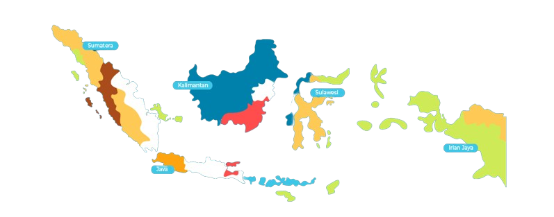

Hidangan
Hidangan
Indonesia
Hidangan Indonesia adalah salah satu tradisi kuliner yang paling kaya di dunia, dan penuh dengan cita rasa yang kuat. Kekayaan jenis masakannya merupakan cermin keberagaman budaya dan tradisi Nusantara yang terdiri dari sekitar 6.000 pulau berpenghuni, dan menempati peran penting dalam budaya nasional Indonesia secara umum.
Check the foods

About Us
We Provide
 Indonesian Food
Indonesian Food
Kami memberikan rekomendasi makanan-makanan dari berbagai daerah seperti Bandung, Yogyakarta, Bali, Jakarta, dan beberapa daerah lainnya.

Popular Dishes
Gudeg
Potongan daging nangka yang direbus dengan gula merah dan santan Yogyakarta
Ayam Betutu
Ayam atau bebek yang dimasak secara utuh menggunakan bumbu rempah khas Bali BaliBika Ambon
Terbuat dari tepung tapioka, telur, gula, dan santan dimasak selama 12 jam MedanBubur Manado
Campuran beras, ubi, labu kuning, jagung manis, serta sejumlah sayuran ManadoKerak Telor
Salah satu kudapan khas Betawi yang terkenal karena cita rasa gurih manis JakartaRendang
hidangan berbahan dasar daging yang dihasilkan dari proses yang lama dengan menggunakan aneka rempah-rempah dan santan MinangkabauPempek
Terbuat dari bahan dasar sagu dan ikan, biasanya disajikan dengan kuah yang disebut cuko yang memiliki rasa asam, manis, dan pedas PalembangAyam Taliwang
Ayam kampung muda yang di bakar dengan bumbu khas taliwang dan biasanya disajikan bersama makanan khas lombok, seperti pelecing Taliwang
Join Us
Join Us For
Join Us For
Updates